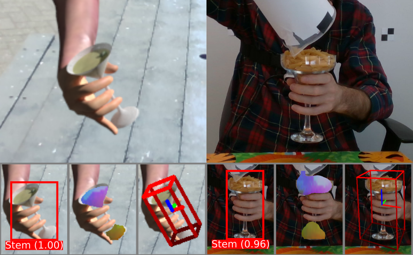
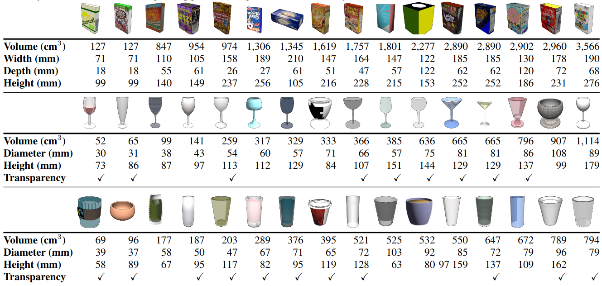
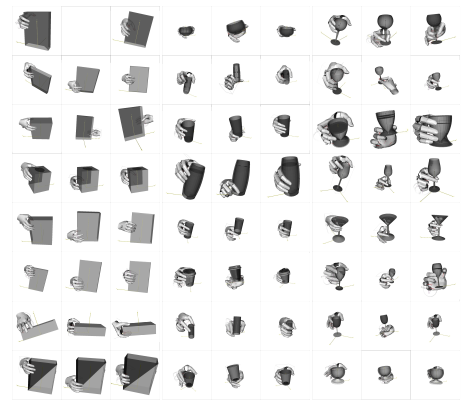
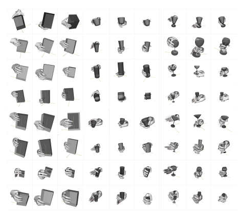
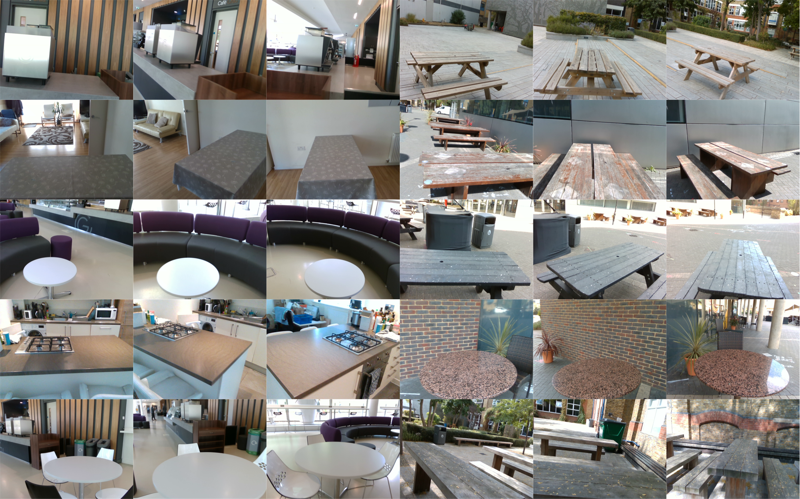

Estimating the 6D pose and size of household containers is challenging due to large intra-class variations in the object properties, such as shape, size, appearance, and transparency. The task is made more difficult when these objects are held and manipulated by a person due to varying degrees of hand occlusions caused by the type of grasps and by the viewpoint of the camera observing the person holding the object. In this paper, we present a mixed-reality dataset of hand-occluded containers for category-level 6D object pose and size estimation. The dataset consists of 138,240 images of rendered hands and forearms holding 48 synthetic objects, split into 3 grasp categories over 30 real backgrounds. We re-train and test an existing model for 6D object pose estimation on our mixed-reality dataset. We discuss the impact of the use of this dataset in improving the task of 6D pose and size estimation.

6D pose estimation for a container manipulated by a person on our mixed-reality (left) and on CORSMAL Containers Manipulation (right) datasets. A model can first identify and localise the container on the image, predict the 3D normalised coordinates, and then recover the pose and size of the object in 3D.
We provide a novel mixed-reality dataset that renders synthetic objects as well as forearms and hands while holding the objects on a real scene. The dataset specifically aims at object instances belonging to categories that can be used for manipulation and handover (drinking glasses, cups, food boxes) and whose object properties highly vary in size, shape, transparency/opaqueness and textures (or absence of texture).
The dataset consists of 48 synthetic container instances grouped into 3 categories: box (top), non-stem (middle), stem (bottom). Instances are gathered from ShapeNetSem. The table below show the containers and their physical properties. Note that object dimensions are rounded to the closest integer, and objects are sorted by the volume of their corresponding primitive shape (cuboid for boxes, cylinder for stem and non-stem).

We define six ways to hold an object based on the used hand and the the position of the hand on the object: grasp at the bottom with left hand (Grasp 1); grasp on top with left hand (Grasp 2); natural grasp with left hand (Grasp 3); grasp at the bottom with right hand (Grasp 4); grasp on top with right hand (Grasp 5); and, natural grasp with right hand (Grasp 6). We use the MANO hand model and the GraspIt! tool to manually generate right-hand grasps for each of the 48 objects, and we mirror the right-hand grasps to generate the left-hand versions. Because of the varying object shapes and sizes, we manually annotate a total of 288 grasps. The image shows the 144 grasps annotated for the right hand.



We acquired 30 images with an Intel D435i RealSense sensor in 10 different scenes (5 outdoor, 5 indoor) under 3 different views. Each background contains a flat surface - e.g., a table or counter - where the (handheld) objects are rendered. The sensor provides spatially aligned RGB and depth images with a resolution of 640x480 pixels. Depth images are captured up to a maximum distance of 6 m, and we apply spatial smoothing, temporal smoothing, hole filling, and decimation as filters during acquisition. For each background, we manually annotate a lighting setup using Blender to resemble the real scene conditions as close as we can when rendering the object on top of the backgrounds. We use sun-like source light for outdoor scenarios, whereas the lighting setup can include multiple omnidirectional and directional point-like source lights and rectangle area-base lights for indoor scenarios to reproduce bulb-lights, LEDs, and windows. These source lights are adjusted in terms of position, orientation, colour and energy strength.
Experimental setup
We split the dataset into training, validation, and testing sets by leaving out six instances for validation and six instances for testing (two instances per category). This results in 103,680 images (36 instances) for training, 17,280 (6 instances) for validation, and 17,280 images (6 instances) for testing.

A Mixed-Reality Dataset for Category-level 6D Pose and Size Estimation of Hand-occluded Containers
X. Weber, A. Xompero, A. Cavallaro
https://doi.org/10.48550/arXiv.2211.10470